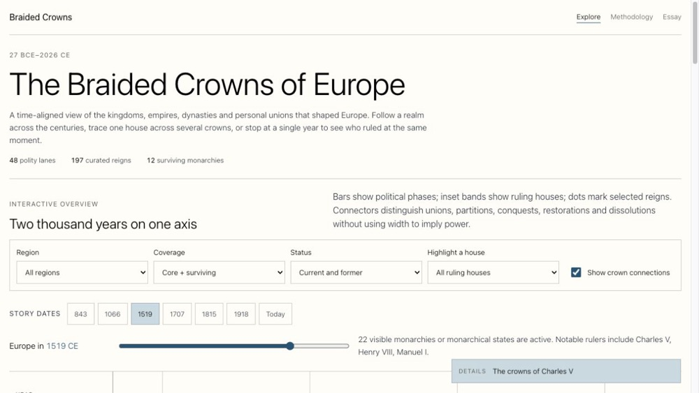
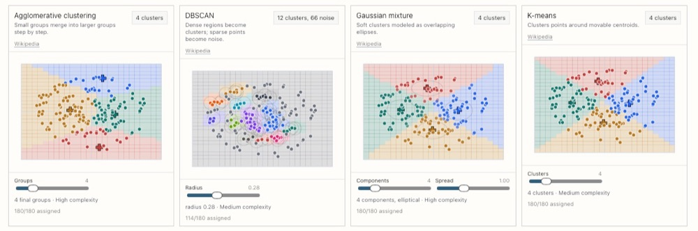
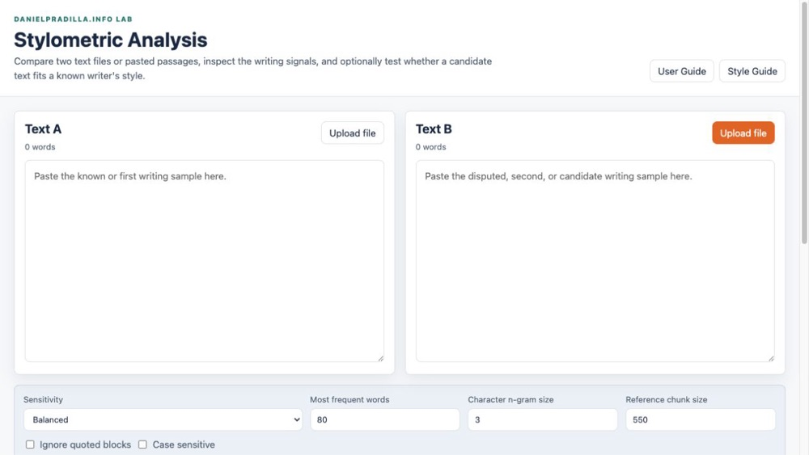
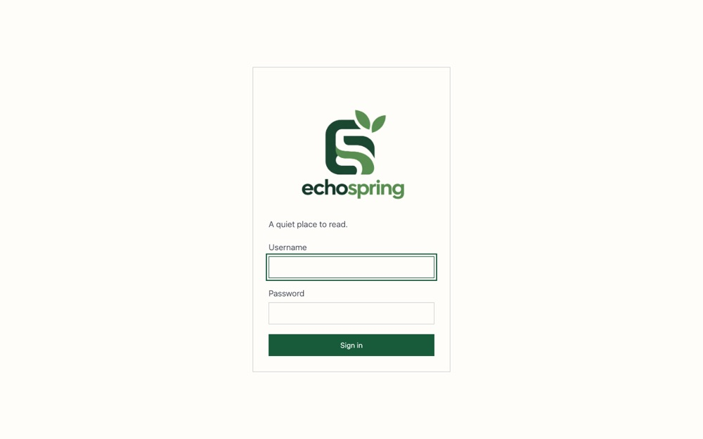
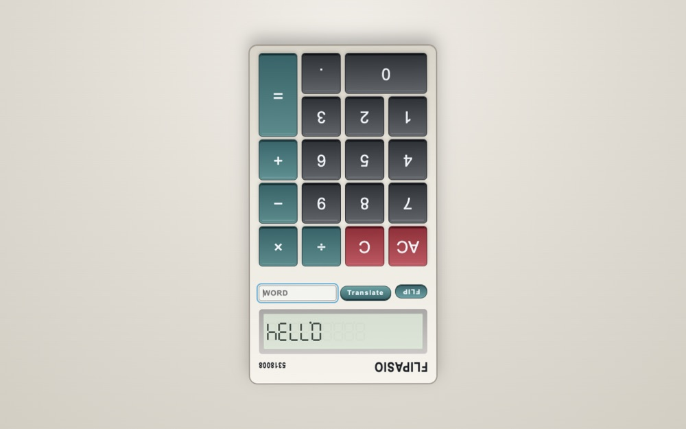
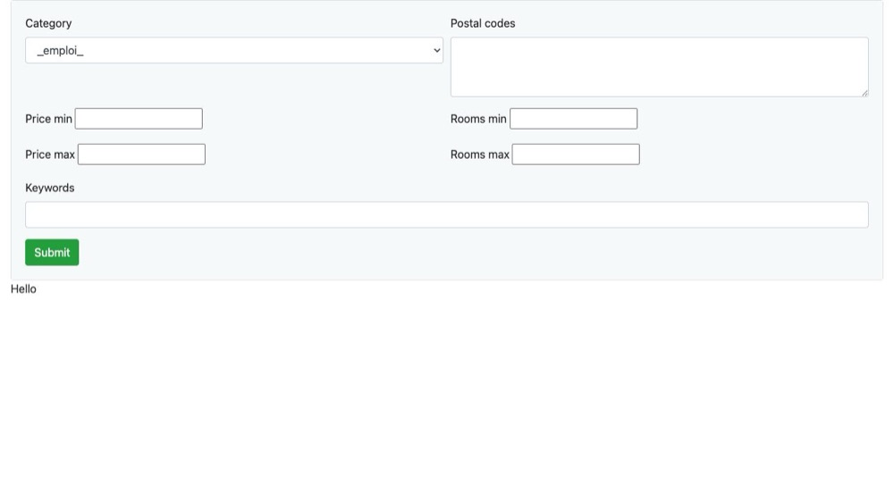

Selected work · 7 published projects
Projects
Small tools, experiments, and visual explanations—built to make something useful or make an idea easier to see.

Data visualization
The Braided Crowns of Europe
A source-backed interactive timeline of major European monarchies from the Roman Principate to 2026.

Interactive explainer
Classification Model Visualizer
Interactive static site for explaining supervised classification and unsupervised clustering models.

Browser tool
Stylometric Analysis
A browser-based stylometry tool for comparing two writing samples and auditing a candidate passage against known writing by the same person.


Web experiment
flipasio
A web-based retro calculator experience inspired by classic 1980s Casio pocket calculators.
